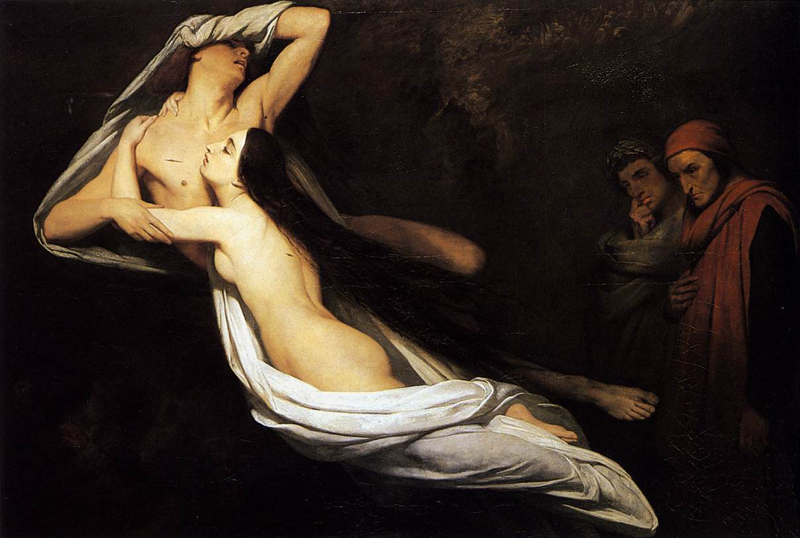

Travel

The Second Circle is where the punishments of Hell proper begin. Here, people who let lust control them in life are blown around by strong winds. You can also find the beast Minos here, where the damned are condemned to their punishment. The number of times Minos wraps his tail around the damned determines the circle of Hell that they will end up in. Be careful around Minos. Since you, the traveler, are still living, Minos shouldn't bother you. But we have had some reports of Minos wrapping his tail around living people anyway—and those people ending up in places they shouldn't be. In the Second Circle, you can find Dido, Achilles, Paris, Helen, as well as Francesca and Paolo, depicted in the painting below. Speak with who you wish, but if you speak to Francesca and Paolo, be careful! Their story has moved some who have visited them so deeply that they have fainted. Try to suspend your emotions when speaking to them and remember that they are damned here and have no hope.
Tip: Why Is Dido Here?
Devotees of Virgil considering traveling to the Inferno may be confused as to why Dido is in the Second Circle for lust as opposed to the Seventh Circle (Second Ring) for suicide. There is no singular answer to this question, other than remembering that the placement of the damned is divine justice. It has been decided that the Second Circle contains the most fitting punishment for Dido, so it is what it is.
While traveling throughout Hell, you will probably notice that the people you speak to do not take responsibility for their sins, or even acknowledge that they did anything wrong at all. Remember that Hell is not a place for rehabilitation, but a place for punishment. The damned deserve to be here and will not learn from their actions or grow in any way. Do not pity them; rather, learn from their sins and be fearful and alert to ensure that you do not do the same.